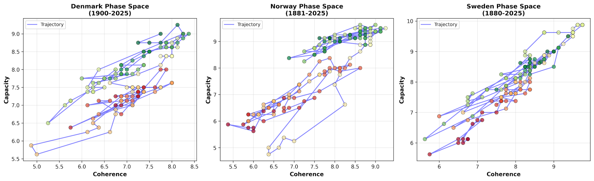

Neutrality, Nordic Systems, and the Discipline of Method
Three solutions to the same coordination problem — and what the order of operations reveals
LinkedIn is hot with the partisanship of the times, but please don't mistake my analytical neutrality for indifference, or my structural analysis for partisanship. It is the habit of bracketing political loyalties long enough to describe something — a scientific standard, a framework that survives scrutiny.
In the Third Division we called it frank and fearless advice: evidence-based, apolitical. CAMS adds scale and historical depth to that tradition.
When analysed quantitatively — across centuries, across multiple societies — societies begin to look more like natural history. Culture and ideology resolve into dynamics that recur across time.
We are all scientists here, watching a living system unfold, with the wonder one brings to ecology, evolution, or deep time.
Three Nordics, Three Solutions to the Same Problem
From a distance, the Nordic countries are of a single type: high trust, strong welfare states, egalitarian politics, low corruption. All three outperform the contemporary United States on core systemic metrics — coherence, capacity, stress tolerance, and institutional coupling.
Compared with Anglo-American systems, CAMS shows all three Nordics with lower stress, stronger coupling between institutional nodes, and far fewer years spent in crisis states where stress overwhelms capacity. During the financial crash, COVID, energy shocks, and migration pressures, neither Denmark nor Norway tipped into CAMS-defined crisis regimes. The United States did so repeatedly.
But CAMS shows exactly how they differ in the ways they achieve this.
🇳🇴 Norway
Lore
Highest overall coherence Cultural capacity as load-bearing structure
🇩🇰 Denmark
Archive
Strongest institutional coupling Flattest node hierarchy in the dataset
🇸🇪 Sweden
Synchrony
Lowest rate dispersion Mandated coordination — powerful but brittle
Those are not cosmetic differences. They reflect deep historical path dependencies — different ways that culture, bureaucracy, negotiation, and resource flows became load-bearing, thermodynamically.

CAMS phase-space trajectories — Capacity vs Coherence. Denmark 1900–2025 · Norway 1881–2025 · Sweden 1880–2025. Each dot is a year; the blue line traces the trajectory through state-space.
Norway Lore Dominant
Norway's long-run signature is the dominance of what CAMS calls the Lore node: education, research, cultural production, symbolic integration. In the contemporary period it outranks every other Norwegian institution by a wide margin. The military is comparatively peripheral. Resource wealth, paradoxically, is not the organising centre.
This did not happen by accident. Norway industrialised late. Lutheran literacy campaigns meant cultural infrastructure spread before factories or oil fields. Odal land rights prevented extreme extraction hierarchies from forming. When petroleum arrived in 1969, it did so into a society already rich in symbolic and institutional capital.
The result is a persistent myth-surplus: narrative and meaning-making capacity running ahead of material pressures. That surplus functions as a buffer. It gives the system time to integrate shocks, absorb warnings, and renegotiate trajectories before crisis dynamics lock in.
One sees the same logic in the sovereign wealth fund. It is not merely fiscal prudence; it is temporal coordination — stretching present abundance into future stability.
Norway's architecture suggests that the nation's cultural capacity is load-bearing. Lore is not decoration; it is infrastructure.
Denmark Archive Dominant
Denmark solves the coordination problem differently. Its dominant node is the Archive: civil service, legal continuity, parliamentary procedure, institutional memory.
Over more than a century — through world wars, occupation, welfare-state construction, and European integration — Denmark shows extraordinary stability in its coherence metrics. No violent oscillations. Few resets. A slow, incremental drift rather than sharp phase transitions.
Its institutional hierarchy is also unusually flat. No single node towers over the others. Helm, Lore, Flow, Shield, Stewards, and Hands sit within a narrow band. The network is tightly coupled, not dominated. This reflects Denmark's historical path: long monarchical continuity, early bureaucratisation, cooperative agricultural movements, gradual democratisation. Change tended to be absorbed procedurally rather than explosively.
Systems that remember how they adapted last time waste less energy reinventing themselves during the next shock. Archive dominance prevents amnesia — the forgetting that makes for revolutionary resets, not negotiated evolution.
Denmark's lesson is that stability can be found in the accumulation of institutional learning.
Sweden Negotiated Synchronisation
Sweden exhibits extraordinarily low rate dispersion: its major institutions tend to change speed together. Labour, capital, and the state are locked into a corporatist negotiation structure that synchronises adaptation.
For decades that produced remarkable outcomes — high growth with low conflict, neutral navigation through two world wars and rapid industrial development.
Yet Sweden experienced a higher share of critical years. The 2015 refugee surge stands out as a genuine coordination shock: metabolic inflows rose faster than negotiation bandwidth could process. Sweden flipped into a stressed configuration.
Tight synchronisation is powerful, but comes with vulnerability. When coordination is mandated through negotiation rather than emerging from surplus capacity elsewhere in the network, external shocks that exceed bargaining throughput can overwhelm the entire architecture.
The Order of Operations
Nordic societies, in three distinct ways, built coordination infrastructure early: cultural integration in Norway, bureaucratic continuity in Denmark, negotiated synchronisation in Sweden. Economic expansion was channelled through those structures.
Anglo-American systems have historically reversed the order. Markets and extraction surge first; coordination mechanisms follow under stress. The payoff has been dynamism and innovation. The cost has been chronic coupling strain and more time in crisis states.
Anglo-American trade-off — dynamism, innovation, higher crisis frequency
Scale
Current era — problems now arrive at system scale, punishing fragmented responses
Neither architecture is superior. They optimise for different trade-offs. But in our current era — climate stress, pandemics, AI governance, energy transition — coordination problems arrive at system scale. They punish fragmented responses. The Nordic cases matter because they show how societies are capable of absorbing shocks without tearing themselves apart.
Why Neutral Analysis Matters
The criticisms I have ventured prior remain anchored in evidence, system behaviour, and long-run civilisational health — not short-term political advantage. Loyal dissent, in this register, is not performance; it is maintenance. It is how systems are warned before brittle attractors harden into inevitabilities.
Watching these Nordic systems over a century is watching three meta-human species adapt to a similar climate in different ways. None is perfect. All are instructive.
Neutrality is justifiable here as the refusal to let narrative outrun structure.
In polarised times, that stance can look unsupportive. From inside the work, it feels like the only way to be useful.
What this issue established
Three Nordic states share macro-level outcomes but arrive through structurally distinct coordination architectures — Lore surplus (Norway), Archive continuity (Denmark), negotiated synchronisation (Sweden)
All three outperform Anglo-American systems on coherence, bond strength, and time spent below crisis threshold across major shocks: 2008, COVID, energy, migration
Coordination infrastructure built before economic expansion produces different stress profiles than coordination mechanisms assembled after expansion under pressure
Tight synchronisation (Sweden) is powerful but brittle under throughput-exceeding shocks — surplus capacity elsewhere in the network (Norway's Lore, Denmark's Archive) provides shock-absorbing slack
Analytical neutrality is not indifference — it is the discipline that makes long-run structural warnings legible before they become irreversible
Datasets: Sweden · Norway · Denmark (CAMS longitudinal series). Analysis cross-referenced: Scandinavian vs Anglo-Saxon Civilizational Contrast; Chaos Dynamics in Civilizational Phase Space; Geography as Destiny.
Analysis:
Scandinavian vs Anglo-Saxon Civilizational Contrast ·
Scandinavian vs Anglo-Saxon: Chaos Dynamics in Civilizational Phase Space ·
Geography as Destiny: How Physical Constraints Shape Institutional Paths ·
Quick Reference: Thermodynamic Framework ↔ Conventional Political Science